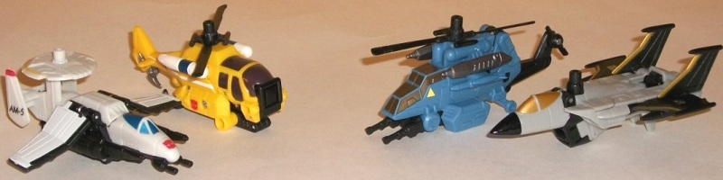
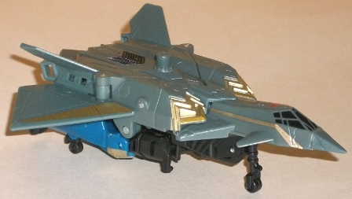
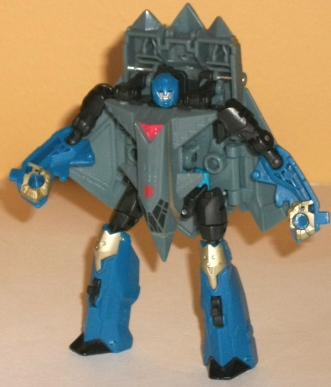
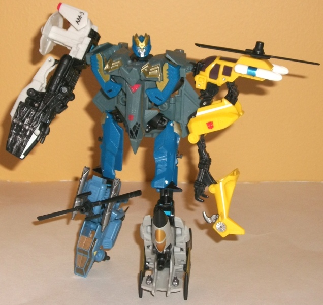

Skyburst
w/ Aerialbots
Skyburst
w/ Aerialbots
Aerialbots

Allegiances
: Autobot
Difficulty of Transformations
: Automatic
Color Schemes
: Light flat gray,
black, off-white, yellow, moderately light sky blue, and some light metallic
gold, light red, metallic silvery blue, silver, white, dark glossy brown,
pale chalky yellow, and metallic bronze
Individual Rating
: 5.8
The first Aerialbot vehicle-limb
I'll cover is "AM-5", the recon. He has the moving radar dish on top (though
it has a bit too many details for a radar dish, admittedly-- I realize
it's odd to complain about TOO MUCH mold detailing, but it applies on this
toy, at this point). The proportions are generally quite good, especially
when you keep in mind it becomes an arm. The wings may be SLIGHTLY undersized,
but only a bit. The white-and-black color scheme is basic, but it works,
and the light red and metallic blue paint apps provide some nice contrast.
There's also a yellow paint app on top of the radar dish, but unfortunately
it blends in with the white so well it's hard to make out unless you have
light shining directly on it. The mold detailing is about what you'd expect
(except for the aforementioned radar dish), with some nice panels, but
not EXTREMELY detailed or anything. In arm mode, the wings actually come
forward and cover up the cockpit, essentially giving the host robot a six-fingered
claw hand. Granted, the claws are merely molded onto the undersize of the
hands which cuts down on the coolness factor some, but it IS an inventive
auto-transformation and the silver paint wash on the claws looks mighty
nice. My personal favorite of the Aerialbot limbs.
The other arm Aerialbot
is the yellow helicopter. Given the color scheme and fairly rounded proportions,
I'm guessing this is more of a rescue-type helicopter. The yellow-and-white
admittedly isn't my favorite color scheme, but works for this type of helicopter,
and the black and dark brown windows go a far ways towards giving this
limb an adequate amount of dark plastic (even if most of it's only visible
in arm mode). The proportions on this one are definitely a bit wonky--
the rotor is definitely undersized (though it can rotate), and the cockpit
is too large. Having the connection port on the front of the cockpit also
looks pretty weird, and the claws of the arm are fairly obvious sticking
out the back end. The mold detailing is also surprisingly sparse on most
parts that aren't the "robot arm" pieces, though the yellow color of the
plastic does hide some mold details that would otherwise be apparent. In
arm mode, this guy spreads out into a really looong, skinny arm with three
rather evil-looking claws that don't really look right on an Autobot. Beyond
it having a solid connection port, I'm having a hard time coming up with
something good to say about the arm mode-- it's just really unsightly,
being both too skinny AND awkwardly long when compared with most other
Power Core arm-vehicles.
Next up is the more
military-esque helicopter. The light blue coloration, along with the black,
works quite well on this guy and fits with Skyburst's colors, and the silver
and the copper cockpit serve as fine contrast colors for this guy's overall
scheme. There could be a LITTLE more paint near the mid area of the toy,
but otherwise he looks just fine in that department. The mold detailing
is about par for the course, though the odd details on the sides of his
windows seem a bit odd. The proportions on this guy are what really bother
me-- the main body of the helicopter is obscenely oversized, and the tail
vastly undersized. It just looks a bit ridiculous, frankly. However, this
guy does have the most moving parts in vehicle mode out of all the Aerialbots--
both his main rotor AND his tail rotor can move, and the front-mounted
dual-barrel machine can move to point downwards as well. In leg mode, this
guy forms... well, one REALLY weak leg. And I mean that in more ways than
one. First off, he doesn't really have anything resembling "toes"-- just
the cockpit of his helicopter and a near-vertical angle, with the machine
guns serving as the "heel". The tail rotor also just hangs unceremoniously
off the back, though a section of the main body rotates up to become a
sort of "kneecap". Unfortunately, the connection port doesn't work that
well, so you often have to physically move out the proper parts and THEN
stick together the connection ports to get it to work-- and it pops out
rather easily. Also, the awful usage of the cockpit as the toe means this
isn't a particularly stable leg. My least favorite of the Aerialbot appendages.
Last up is the jet-leg
Aerialbot. The light gray plastic and black don't exactly clash, but they're
the most boring of the Aerialbots' color schemes, in my opinion. The gold
cockpit and paint apps along the sides of his wings help a bit, but a few
more on the main body or the exhaust ports couldn't have hurt. The mold
detailing is average overall, but again, the proportions are off-- the
wings are waaaay undersized to the point where it's laughable, particularly
the "main" horizontal wings. In leg mode, this Aerialbot is unfortunately
another one where the connection port just doesn't work the way it's supposed
to-- like the other leg Aerialbot, you have to manually move the pieces
into their leg configuration and hold them there until you connect the
two ports for the leg to properly stay as a foot, and this one pops off
rather easily too. Worse than that, the automorph feature just plain DOESN'T
WORK with the wings-- you have to continually fold the main wings back
and the tailwings forward to form the "foot" anytime you put his foot down
on solid ground again, and as soon as you lift the foot up again the wings
spring back to their vehicle mode position. UGH. Also because of this,
he tends not to serve as that stable of a leg for the host robot, either.
The AM-5 jet limb is
a pretty nice design, but the rest of the Aerialbot limbs just plain stink
on ice, particularly the legs, where the connection ports and "automorph"
features just plain don't work and provide little balance for the host
robot. Add the odd proportions on most of them, and they're definitely
my least favorite of all the Power Core Combiner limb teams.
Skyburst



Allegiance
: Autobot
Difficulty of Vehicle/Robot Transformation
:
Very Easy
Difficulty of Torso Transformation
:
Easy
Color Scheme
: Dull dark grayish
blue, black, dark blue, and some pale metallic gold, silver, light sky
blue, and red
Individual Rating
: 6.7
Skyburst's vehicle mode
is a stealth jet. The proportions for this mode are generally pretty good,
with some pretty good mold detailing of panels and the like all along the
top. However, the BIG exception to Skyburst's good proportions are his
robot legs and arms, which jut out rhater obviously from below the bulk
of this mode. There isn't even any real "rear" to the plane, just the bottom
of the feet and hands. Ignoring that big piece o' robot's a bit hard, but
otherwise this mode manages to look mighty nice, particularly for a Power
Core Combiner. The color scheme-- predominantly a grayish blue, here--
isn't the hottest around, but the stripes of metallic gold do contrast
quite well with it, and in robot mode the dark blue helps to diversify
the color scheme a bit more. I love that all of Skyburst's myriad cockpit
windows are painted, though it's extremely odd that he HAS so many windows
up there in what is otherwise a fairly realistically-looking jet. Of additional
note is that Skyburst has three flip-out landing gear.
Skyburst's transformation
to robot mode is remarkably simple, involving basically just splaying his
limbs out and then folding his cockpit down to become his robot chest.
Skyburst's core robot mode proportions are generally pretty good in this
mode (though the lower arms are a bit two-dimensional, looking very skinny
from the wrong angle). However, he still has the same basic problem that
his vehicle mode has, but in reverse-- now all of his VEHICLE bits basically
just sit on his back, with the exception of the cockpit-chest. The wings
help frame his silouhette on the sides a little, but otherwise it's a bit
of an eyesore, especially when you consider how far above his shoulders
his backpack actually rests. Plus, Skyburst's feet are mostly hollow and
have no heels-- this would already be bad enough, but throw in how back-heavy
he is and it's a bit difficult to get him standing up in a normal position.
His overall articulation is decent, though-- he can move at the neck, shoulders,
elbows (at two points), hips, and knees (at two points). Nothing extraordinary,
but it gets the job done. The aerodynamic detailing on his "robot bits"
is generally pretty nice-- particularly where it's highlighted by gold--
but his head design is a bit off. The proportions are fine, but that's
some details around his mouth that just seem to be random lines with no
real purpose-- it's very odd, and makes him look old, oddly enough.
Skyburst's torso mode
is a bit more complex in its transformation, with part of the back actually
fitting over the robot chest. The arms and part of the back wings also
combine in a really firm manner, and form quite a believable, solid-looking
chest. I particularly like the gold detailing on the inside of the arm
pieces and on the front of the "chest vents"-- it really helps to bring
the mold detailing together in this mode. (As for his combined head design,
I have the same feelings about it that I do his regular robot head-- it's
a nice silouhette, but there's too many little unneeded details around
his mouth the point where it just looks weird.) Unfortunately, a large
piece of Skyburst's back can come undone rather easily during transformation,
and it's a bit of a pain to get it back on. Plus, it just flops around
in this mode, with no real place to lock in. To make things even
worse
,
that floppy piece of plastic is the only place where Skyburst has a Powerlinx
port, so good luck getting a Minicon in chest-armor mode onto this guy
and not having his whole back just flop down behind his waist from the
weight.The torso mode's upper legs are also just obviously Skyburst's regular
robot legs with the combiner ports flipped out of the bottom, and look
a bit skinny for the job in addition to not locking into any particular
position securely. Still, overall I think the torso mode is definitely
Skyburst's most inventive-- and relatively kibble-free-- mode.
Skyburst has an
okay
torso mode-- particularly in the chest-- and good proportions, but a LOT
of kibble in both his regular robot and vehicle forms. This is definitely
one of my least favorite Power Core Combiner toys, and not one I'd recommend
except to the obvious line completists.
Skyburst w/ Aerialbots Bio
:
To be given command of one of the first
Autobot Power Core teams is a great honor-- one that Skyburst isn't sure
he deserves. He uses his enhanced abilities to execute search and rescue
operations in conditions too dangerous for human crews-- or even other
Autobots. Together with his drone companions, Skyburst protects the skies
from the Decepticon threat.
Strength: 9.0
Intelligence: 5.0
Speed: 9.0
Endurance: 8.0
Rank: 8.0
Courage: 6.0
Fireblast: 5.0
Skill: 5.0
Reviews by Beastbot
Back to Power
Core Combiners Index